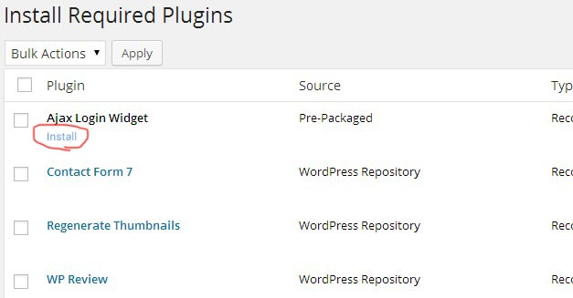

- Welcome
- 1- Installation - Activate
- 2- Activate Plugins
- 3- Import xml Dummy Data
- 4- Import Widgets
- 5- Import Options Backup
- 6- Navigation Menu
- 7- Homepage Setup
- 8- Page Builder
- 9- Contact Form
- 10- Post Formats
- 11- Disqus Comments Form
- 12- How to use Retina icons anywhere ?
Welcome to SevenMag Help Documentation
Thanks for purchasing this theme , this help file will guide you to install the theme and customize it.
Feel free to contact me Here
Installation Theme and Activate
1- Upload Via FTP
Open filezilla software then login to your FTP account for upload theme via FTP to your host, now go to directory "wp-content > themes" and move (Upload) theme folder "sevenmag" on your host in themes folder
2- Activate Theme
So after uploading folder of theme, now go to your "Dashboard > Appearance > Themes" then you can see theme name and screenshot then hover on it then click on Activate
NOTE
Some people use the wordpress uploader, and upload the whole zip file. You must avoid this because the zip file that you download from market place, contains a few other folders other than the theme source such as PSDs, Licensing and etc.
Also inside the packed there is a zip file that can be used by wordpress to upload and install.
Required Plugins
Remember that after activating sevenmag, you would be notified about installing a few plugins. In this section we show you how to activate one of them which is named "Ajax Login Widget". The notification window is like the image below. As you see, there are three plugins that you need to install: Ajax Login Widget, Contact Form 7 and Page Builder.
Click on Begin installing plugin on the appeared box to go to another page called Install Required Plugins, then hover your mouse over Ajax Login Widget to install link appears.

Then click on Install and wait untill the plugin be installed. When the plugin get installed successfully, you would see a link named “Return to Required Plugins Installer”.
Activate the plugins as shown below.
Finally click on it to finish installing and activating “Ajax Login Widget plugin”.
You can also do the above steps for the other plugins to activate them.
Also You can install and activate all plugin with two steps
Install all plugins:
Then activare all plugins:
Import Demo Content
Under menu tools select Import. then click on Wordpress, Like shot:
1- (Tools > Import) Click on Wordpress
2- Install Wordpress Importer Plugin
3- Activate and Run Importer
4- Select your file and upload it:
5- Submit it (It may take several minutes)
6- Note: about Featured Images (if you have blog posts)
If you have blog posts before this time, you should run Regenerate Thumbnails plugin once for regenerate all images for featured images in all posts:
(Tools > Regen. Thumbnails)
Import Widgets
First of all go to your widgets page and remove all widgets from sidebars, Then Go to your plugins and click on Add new, then type "Import Widget" and search
Then install now "Widget Importer and Exporter"

After install plugin click on Activate Plugin
Now go to "Tools > Widget Importer & Exporter" and then choose file "demo_widgets.wie" then click on Import Widgets
Note:
We cant include premium plugins in the theme so we cant purchase and include Arqam social counter plugin, So if you need it you should purchase it here: Arqam Social Plugin
Also you can use "Social Count Plus" free plugin instead arqam social counter Social Count Plus
Import Options Backup
Go to your download package and open folder Demo_content then open options_backup.txt then copy all (text) content inside it.
Then go to your Dashboard > Appearance > Options Backup and paste your backup to first textarea then click on Import Theme Options
Setting Up New Navigation Menu
To register the new navigation menu, go to appearance -> menus from the dashboard left sidebar.
Like the image below, insert your menu name and then click Create Menu button.
You can select your menu items from the left sidebar list of pages, categories, custom links, and etc. Then select your navigation location and Finally click Save Menu to save changes:
How to add category posts Mega Menu
How to add Two columns mega menu link list
First of all please activate "CSS Classes" from top of the right screen "Screen Options" then follow:
Homepage Setup
After import demo content just you should go to Settings > Reading and choose "A static page (select below)" and then select your page for home.
Page Builder
sevenmag comes with a powerful page builder. When you want to create a new post or page, first of all click on Visual Composer button to be able to use sevenmag page builder features. follow:
make changes on block settings and then save it.
then change page template and if you want change page options and then publish it.
Contact page and contact forms
sevenmag uses Contact Form 7 WordPress plugin. This plugin enables you to create your desired forms and generate one shortcode for each created form.
You can easily use these shortcodes on your pages, sections and widgets. Therefore you would be able to put your forms almost every where you want.
Contact Form 7 Page
As you see in the picture below, every generated form, has a specific shortcode.
To setup a contact page, first of all create your desired contact form and copy the generated shortcode.
Then go to Pages -> Add New then put your title and content and paste the copied shortcode there:
You can simply put your contact forms into your posts exactly as like as you do it for pages.
Adding Contact Forms To Widgets
As we said about sidebars and widgets in previous sections, sevenmag has some pre defined widgets and sidebars and also lets you create your desired sidebars.
Well, you can also put Contact Form 7 generated shortcodes into your sidebars via a text widget. To do this simply add a text widget into the sidebar you want to have
a contact form in:
Then insert the widget title and paste the copied shortcode of your desired form that is generated by "Contact Form 7" into the widget content area:
Finally click "Save" button to save the changes.
As you see, you can create your desired contact forms and put theme almost every where you want. You can have contact forms into the pages, posts, columns, sidebars and footers.
Post Formats
sevenmag supports four useful post formats. When you select a post format (while editing or creating a post), you will have specified options under Format: * which would be related to the selected post format of yours.
For example when you select Video post format, you sould scroll down to set a value for Video Embed Code.
How can i add disqus comments form instead difault wordpress comments form?
Go to your plugins and select on add new, Then type "disqus" and install+activate disqus plugin then go to your comments and add your disqus login information and activeit.
How to use Retina icons anywhere?
put bellow code anywhere you want display retina icon:
<i class="fa fa-user"></i>Also for change icon class, just go to this url and see all icons names: http://fortawesome.github.io/Font-Awesome/icons/